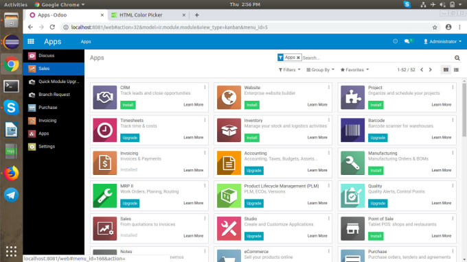

Introduction :
Notre projet SAE vise à simplifier et automatiser le processus d'installation d'Odoo, une plateforme de gestion d'entreprise, sur des machines distantes. Pour cela, nous avons développé des scripts Bash qui orchestrent l'installation et la configuration d'Odoo, ainsi que des composants essentiels tels que Traefik pour le reverse proxy et PostgreSQL pour la base de données. Le tout est encapsulé dans des conteneurs Docker, assurant ainsi une isolation et une portabilité accrues.
Fonctionnalités clés :
-
Automatisation complète : Nos scripts prennent en charge l'ensemble du processus d'installation, depuis le déploiement des conteneurs Docker jusqu'à la configuration des paramètres spécifiques à chaque composant.
-
Utilisation de Docker : Nous avons opté pour Docker en raison de sa facilité de déploiement, de sa gestion des dépendances et de son isolation des environnements. Cela garantit une installation propre et reproductible dans n'importe quel environnement Docker compatible.
-
Traefik pour le reverse proxy : Traefik est intégré pour gérer le routage et la sécurité des requêtes entrantes vers les conteneurs Odoo. Cela simplifie le déploiement en éliminant la nécessité de configurer manuellement le reverse proxy.
-
PostgreSQL comme base de données : PostgreSQL est utilisé comme moteur de base de données pour Odoo, assurant des performances élevées, une robustesse et une compatibilité avec de grands ensembles de données.
-
Sauvegarde automatique : Nous avons également inclus des mécanismes de sauvegarde automatique pour garantir la sécurité des données. Les sauvegardes sont planifiées et stockées sur une machine dédiée, assurant ainsi la récupération en cas de problème.
Ce projet m'a permis de développer mes compétences en automatisation et en déploiement d'applications. J'ai appris à concevoir des scripts Bash robustes et modulaires, ainsi qu'à utiliser des technologies telles que Docker, Traefik et PostgreSQL dans un contexte réel. De plus, en travaillant sur ce projet, j'ai gagné en compréhension des architectures logicielles modernes et en capacité à résoudre des problèmes complexes.
Odoo :
